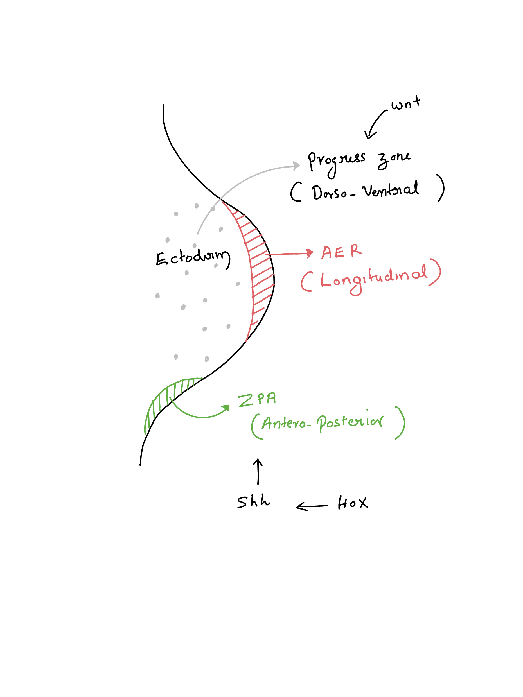

Embryology
Embryonic Germ Cell Layers
The human embryo consists of four distinct germ cell layers that give rise to different tissues:
- Ectoderm (outer layer)
- Mesoderm (middle layer)
- Endoderm (inner layer)
- Neural Crest
Considered a fourth germ cell layer due to its early presence in development.
Timeline of Skeletal Development
| Time Frame | Developmental Milestone |
|---|---|
| 4 Weeks | Limb buds appear, with the upper limb developing 48 hours before the lower limb. |
| 8 Weeks | Limbs rotate 90 degrees: the upper limb rotates externally, while the lower limb rotates internally (thumb lateral, big toe medial). |
| 12 Weeks | Primary ossification centers of long bones are present (humerus is the first to appear, followed by the femur). |
| 36 Weeks | Secondary ossification centers begin to appear, with the distal femur being the first. |
Limb Bud Development

Limb development follows a well-defined pattern along three axes:
Proximo-distal Axis (longitudinal)
The Apical Ectodermal Ridge (AER) is a key structure in limb development that plays a crucial role in controlling the proximal-distal growth of the limb, meaning it governs the extension of the limb from the body (proximal) to the tip of the limb (distal).
The AER is a thickened area of ectoderm (the outer layer of cells) located along the tip of the developing limb bud. The AER secretes signaling molecules, such as Fibroblast Growth Factors (FGFs), which stimulate the growth of underlying mesenchymal cells in the limb bud, promoting the elongation of the limb along the proximal-distal axis.
TipControlled by the Apical Ectodermal Ridge (AER)
Regulated by the Homeobox gene
Antero-posterior (medio-lateral)
The Zone of Polarizing Activity (ZPA) is a critical signaling region located at the posterior side of the developing limb bud, near where the future little finger will form.
The ZPA plays a key role in determining the anterior-posterior axis of the limb, which is the direction from the thumb (anterior) to the little finger (posterior). The ZPA produces a signaling molecule called Sonic Hedgehog (Shh), which diffuses from the posterior side of the limb bud toward the anterior side, creating a concentration gradient.
High levels of Shh promote the development of structures on the posterior side, such as the little finger.
Lower levels of Shh on the anterior side contribute to the formation of structures like the thumb.
TipControlled by the Zone of Polarizing Activity (ZPA)
Regulated by the Sonic Hedgehog gene
Dorso-ventral Axis (anterior-posterior)
- Controlled by the surface ectoderm overlaying the mesoderm
- The dorsal surface grows faster, causing the limbs to curve.
| Structure | Function | Developmental Disorders | Description |
|---|---|---|---|
| AER (Apical Ectodermal Ridge) | Regulates proximodistal growth of the limb. | Phocomelia | Severe shortening or absence of limbs. |
| Amelia | Complete absence of one or more limbs. | ||
| Meromelia | Partial absence of a limb. | ||
| ZPA (Zone of Polarizing Activity) | Establishes anterior-posterior axis (thumb to little finger orientation). | Polydactyly | Extra fingers or toes (duplication). |
| Syndactyly | Fusion of fingers or toes due to disruption in ZPA signaling. | ||
| Radial Club Hand | Structures on the radial side of the limb, such as the radius and thumb, are underdeveloped or absent. | ||
| Mirror Hand Syndrome (Ulnar Dimelia) | Duplication of the ulnar side of the hand (usually with extra digits), caused by ZPA misregulation. | ||
| Surface Ectoderm of Limb Bud | Differentiates into skin and helps in limb morphogenesis. | Ectrodactyly (Split Hand/Foot Malformation) | Absence of one or more central digits, forming a “cleft” hand or foot. |
| Nail-Patella Syndrome | Abnormalities of nails, knees, elbows, and pelvis due to ectodermal disruption. | ||
| Cleft Hand/Foot | Abnormal cleft between fingers or toes due to failure of surface ectoderm closure. |
Formation of Joints and Ossification Centers
The process of joint and bone formation involves multiple steps:
- Chondrification
- Mesenchymal cells in the mesoderm differentiate into chondrocytes, forming a cartilaginous skeletal anlage.
- Joint Formation
- Segmentation, resorption, and cavitation of the cartilaginous anlage create primitive joints, with intra-articular structures developing through resorption and differentiation.
- Ossification
- Primary ossification centers appear due to the hypertrophy of mid-diaphyseal chondrocytes, vascular invasion, and the development of the nutrient artery system.
- Periosteal intramembranous ossification occurs first, followed by enchondral ossification at the physis.
- Secondary ossification centers develop in the epiphysis around 30-36 weeks, following vascular invasion.
Spinal Development
The development of the spinal column is closely regulated by the Homeobox gene and occurs as follows:
- A mid-sagittal groove forms in the ectoderm.
- The groove deepens, folding into itself to create the neural tube.
- Failure of closure results in spina bifida.
- Neural crest cells lie dorsally, while the notocord lies ventrally, with the neural tube in between.
Key Structures Derived from Embryonic Layers
| Structure | Origin |
|---|---|
| Neural Crest | Peripheral nervous system, basal ganglia, sympathetic chain |
| Neural Tube | Spinal cord |
| Notocord | Vertebrae, intervertebral discs, and spinal muscles |
Spinal Column Development
The spinal column develops entirely from the notocord. The notocord gives rise to somites, which are segmental aggregations of mesenchymal cells aligned along the notocord. Each pair of somites corresponds to future vertebrae.
| Vertebral Segments | Somites |
|---|---|
| Cranium | 4 |
| Sacral | 5 |
| Coccygeal | 4 |
- Failure of formation leads to hemivertebrae.
- Failure of segmentation can result in vertebral anomalies like bars, block vertebrae, or Klippel-Feil syndrome.
Ossification Centers in the Spine
| Ossification Centers | Vertebrae |
|---|---|
| Anterior Center | Vertebral body (anterior). |
| Posterior Center | Posterior vertebral body and elements. |
| Costal Center | Ribs and transverse processes. |
| C2 Exception | C2 has 5 ossification centers instead of 3. |
The C2 vertebra, (axis), has five ossification centers during development. These centers are divided as follows:
- One center for the body (centrum).
- Two centers for the neural arches, one on each side.
- Two centers for the dens (odontoid process):
- One in the base of the dens.
- One in the apex of the dens.
Development of Intervertebral Disc
- Nucleus Pulposus develops from the notocord.
- Annulus Fibrosus forms from sclerotomal cells derived from the notocord.